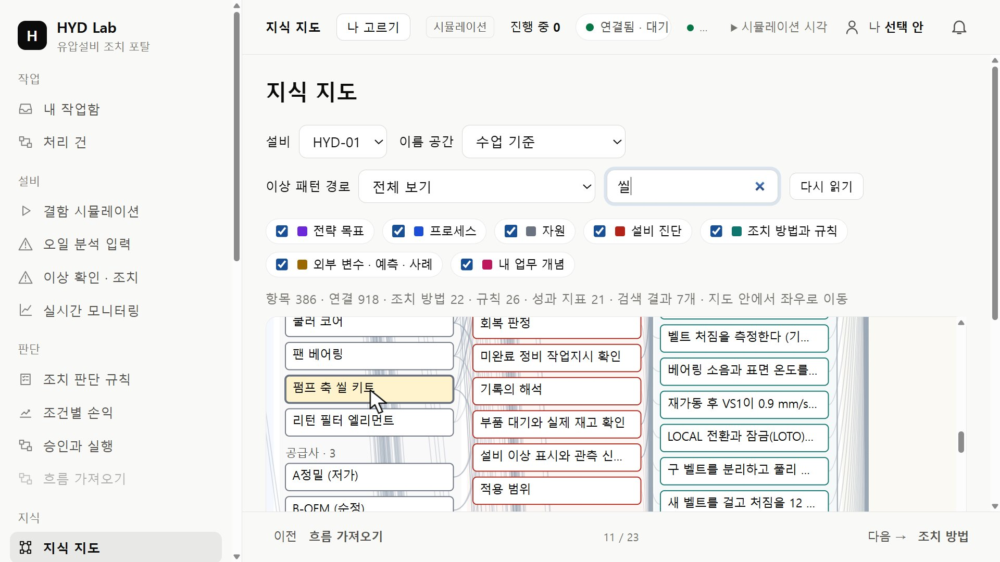
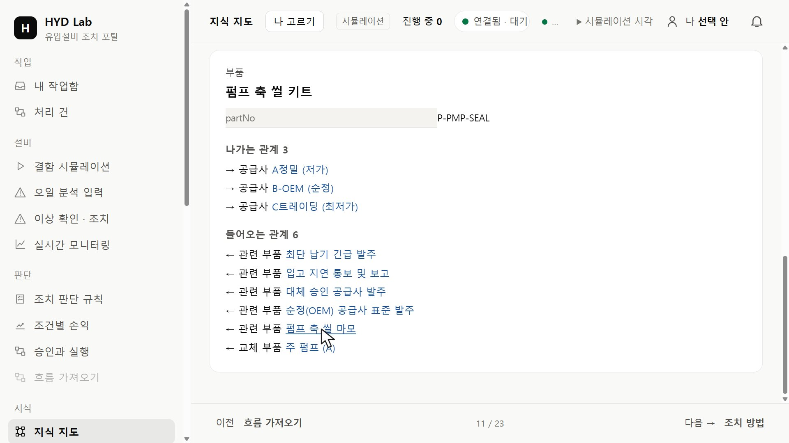
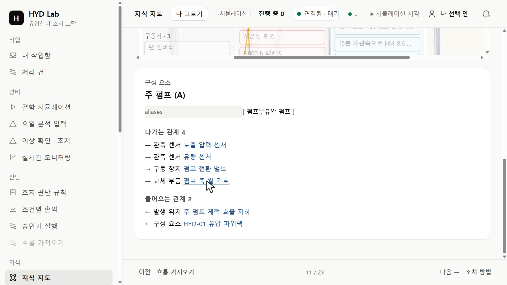
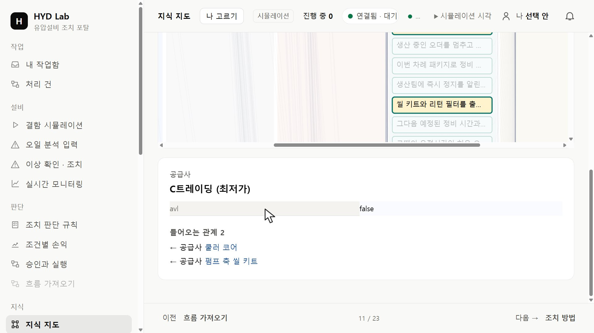
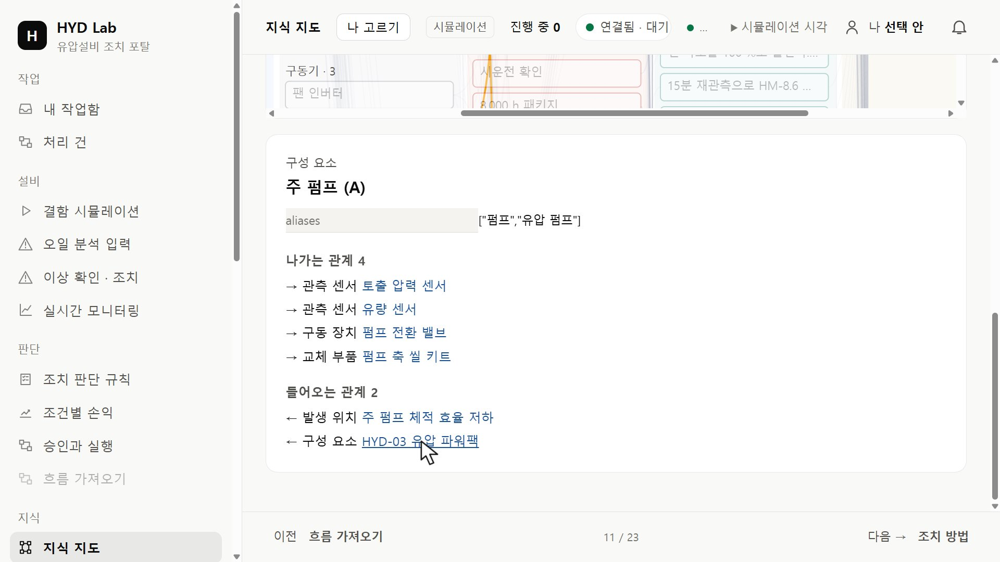

HYD · 실습 가이드기준 설비 지식의 실제 연결 구조 확인하기
연결된 대상을 확인하고, 결과의 근거를 원자료와 대조합니다.
01 펌프 축 씰 키트 찾기
포털 시작 결과에 표시된 주소 또는 강사가 안내한 주소를 브라우저에서 엽니다. 왼쪽 메뉴에서 「지식」 → 「지식 지도」를 누르고 설비 칸에서 HYD-01을 선택하세요. 검색 칸에 씰을 입력하고 펌프 축 씰 키트를 선택하세요.

02 부품 번호 확인하기
지도 아래 상세 칸에서 종류와 partNo를 확인하세요. 나가는 관계와 들어오는 관계 중 어느 쪽에서 이 부품을 사용하는 구성 요소를 찾을 수 있나요?

03 식별자로 부품 다시 찾기
지도 검색 칸의 씰을 지우고 part:pump-seal을 입력하세요. 강조된 펌프 축 씰 키트를 누르고 상세 칸의 부품 번호를 처음 보았던 번호와 대조하세요. 검색에 쓴 그래프 식별자와 부품을 주문할 때 쓰는 품번은 어디에서 확인했나요?
04 구성 요소에서 설비로 이동하기
들어오는 관계에서 주 펌프를 누르고, 상세 칸에서 주 펌프가 속한 설비를 확인하세요.

05 공급 연결 읽기
다시 부품을 선택하고 연결된 공급사를 눌러 화면에 표시되는 속성을 읽으세요. 공급 관계만으로 현재 재고와 납품 가능 여부까지 확인할 수 있을까요?

06 다른 설비의 사용처 비교하기
설비를 HYD-02로 바꾸고 같은 품번에서 구성 요소와 소속 설비로 거슬러 가세요.
07 세 번째 설비에서 품번 확인하기
설비를 HYD-03으로 바꾸고 같은 품번의 씰 키트를 찾으세요. 주 펌프에서 소속 설비까지 연결을 확인하고 다시 부품 상세로 돌아오세요.

08 구매 기준 문서 찾기
씰 키트에서 발주 방법을 선택하고 승인 공급사 규칙으로 이동하세요. 규칙에 연결된 근거 절을 누르고, 그 절이 속한 구매 기준 문서 이름을 누르세요. 지도 아래 상세 칸에 표시되는 문서 이름을 확인하세요.
09 공급 승인과 재고 구별하기
지도에서 씰 키트에 연결된 공급사의 승인 여부를 확인하세요. 검색 칸에 씰 키트 가용을 입력하고 재고의 출처를 찾은 뒤 부품 상세로 돌아오세요. 공급사 승인 표시만으로 지금 몇 개를 언제 받을 수 있는지 답할 수 있나요?